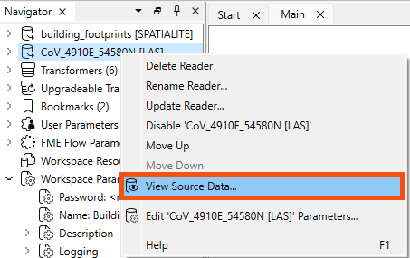
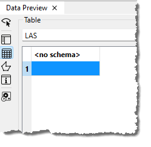
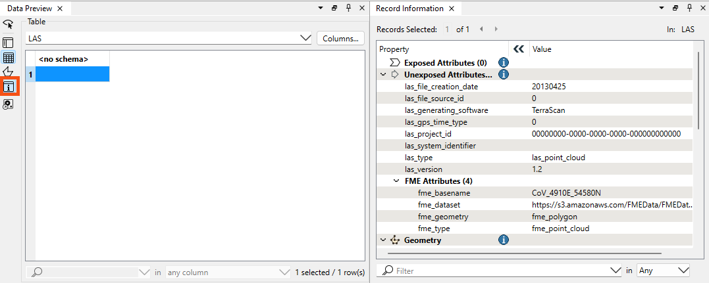
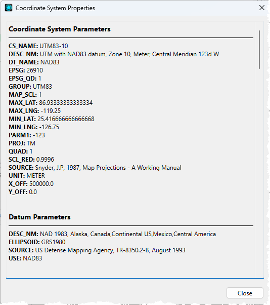
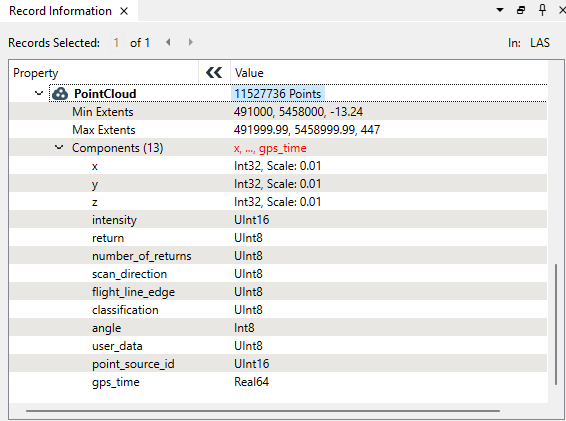

Learning Objectives
After completing this lesson, you’ll be able to:
- Query records for additional information.
- View coordinate system information about features.
Instructions
In this lesson, you will:
- Scroll down to read the text below.
- Complete the exercise by following the steps.
- Complete the Quiz toward the bottom of the page.
- Optional: Let us know if you found this lesson relevant to your role by filling out the survey at the bottom of the page.
- Click 'Next' to mark the lesson complete.
Resources
Scenario

Sven's colleague Amar is starting an FME project to convert 2D building footprints to 3D models by comparing them with a point cloud.
He has already started a workspace. It takes 2D building footprints and extrudes them to make 3D buildings. He wants to compare the resulting extruded 3D buildings to a point cloud to see whether the extrusion is roughly correct with respect to what is observed in the point cloud.
Amar has not yet inspected the point cloud dataset and is curious about the units of distance used (feet or meters) and the software used to generate it—TopoDOT was previously used, but Terrascan was used for the most recent point clouds.
Help him find out this information by using the Record Information Window.
1) Open FME Workbench
- Start FME Workbench (2026.1 or later).
- Open the starting workspace (C:\FMEData\Workspaces\IntegrateDataWithTheFMEPlatform\view-information-about-a-specific-record.fmw).
2) Inspect Source Data
The point cloud format is ASPRS Lidar Data Exchange Format (LAS). The reader is listed in the Navigator window as [LAS].
- Right-click on the LAS reader and select View Source Data… to inspect the original dataset.

- Observe that Table view in Data Preview shows no attributes
- <no schema> indicates that no exposed attributes are present in the dataset.
- Exposed attributes appear in the Table view and will be written out if connected to a writer feature type and defined on its schema.

However, that does not mean there are no attributes at all. The features will have format attributes, which are not displayed in the Table view by default. It could also contain other unexposed attributes in some cases.
A quick check of the ASPRS LiDAR Data Exchange Format (LAS) "Quick Facts" in the documentation confirms that this format does not support user-defined, i.e. exposed, attributes. But there are more attributes than just user-defined attributes.
- Select the single feature in Table view.
- Look in the Record Information window.
The Record Information window displays everything FME knows about the feature selected in the Table or Graphics view. Here, you can find all the user-defined attributes, format attributes, coordinate system information, and geometry information. It's open by default on the right side of Workbench, but you can also toggle it using this highlighted button on the left of the Data Preview window.

- Note the top-right of Record Information reports the feature type or port name.
- Find the sections below that: Attributes, both Exposed (shown in Table view and written out to the destination table) and Unexposed (used by FME but not shown in Table View or written to the destination table).
Because this feature is spatial, the Geometry section below Attributes contains information on:
- Its coordinate system
- Summary information about its geometry (dimension, number of vertices, and extents)
The coordinate system name under Geometry is a link.
- Click on UTM83-10 to open the Properties dialog for the coordinate system.
- Here, you can see that the units for UTM83-10 are meters. This is important for Amar to know, especially if he plans to do any calculations, such as measuring a distance or an area. By default, FME will use the coordinate system’s unit as measurement, and the result would look odd if those units were degrees!
- Using the Record Information window and Coordinate Systems Properties dialog is one of the fastest ways to determine what units you are working with when calculating areas or distances.

- Close the Coordinate System Properties dialog.
- Check the items under the Unexposed Attributes header in the Record Information window.
- This section reports the attributes associated with the feature, including user attributes and format attributes (for example, fme_type).
- Observe that TerraScan, not TeraDOT, generated this dataset, so this is the more recent point cloud dataset.
- Note the creation date of this LAS file (las_file_creation_date (string): 20130425) and the LAS version (las_version (string): 1.2).
- Find additional information under FME Attributes, including the location of the dataset (
fme_dataset (string): https://s3.amazonaws.com/FMEData/FMEData/Data/PointClouds/CoV_4910E_54580N.laz).
- Check the Geometry section in the lower part of the Record Information window.
- This section reports the feature's geometry. It includes the geometry type and a list of the coordinates that make up the feature. Here, you can see the extent of the data and the number of points in the point cloud.

- While the Table view typically only shows exposed user-defined attributes, the Record Information window displays FME-generated format and list attributes.
- You can expose any user-defined attributes or fme_type attributes visible in Record Information for display in the table, allowing you to use them in your workspace.
Learn More
Leave Us Feedback on This Lesson